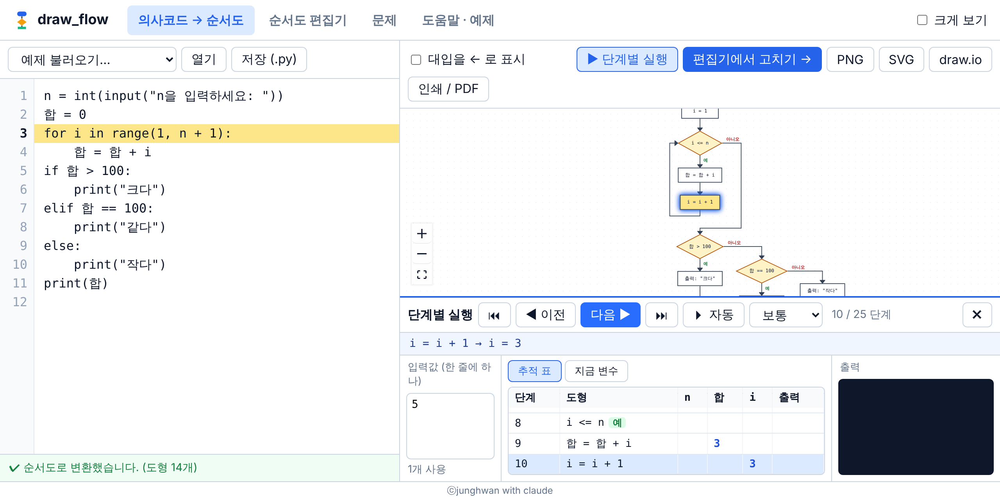

파이썬 문법으로 쓰면 바로 순서도로 그려 줍니다. 틀린 곳은 몇 번째 줄인지 한국어로 알려 줘요.
도형을 놓고 화살표로 이어 직접 그립니다. 자동 정렬과 코드로 변환도 할 수 있어요.
지금 실행 중인 도형과 코드 줄이 노랗게 표시되고, 변수 값의 변화가 추적 표에 기록됩니다.
선생님이 만든 문제 링크를 열어 풀고 채점하기를 누르면, 짜임새와 실행 결과를 비교해 줍니다.
n = int(input())
합 = 0
for i in range(1, n + 1):
합 = 합 + i
print(합)
지원 문법: input print if/elif/else while for break continue def/return. 자세한 내용은 사이트의 도움말 · 예제를 보세요.